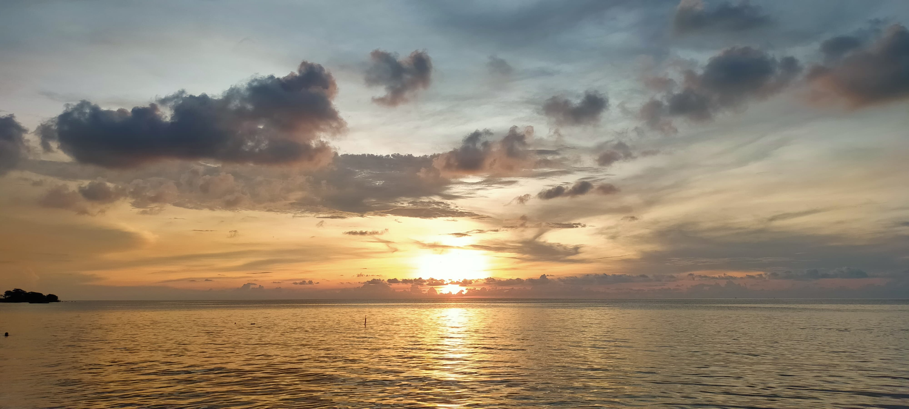

Wisata Alam Kano & Sunset
Nikmati keindahan sunset dengan aktivitas kano di Pantai Blebak, Desa Sekuro, Mlonggo, Jepara
Jelajahi Wisata Kano
Blebak Segara View
Pemandangan laut yang memukau dengan air jernih dan pantai berpasir putih
Lihat Keindahan
Resort & Villa Sekuro Village
Akomodasi mewah dengan fasilitas lengkap untuk liburan yang tak terlupakan
Lihat Lokasi